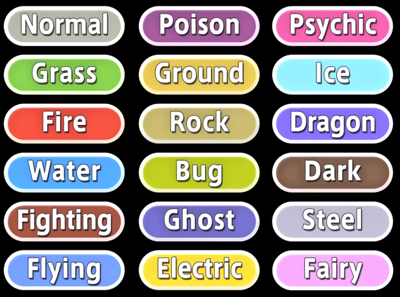
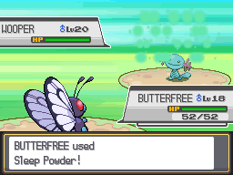
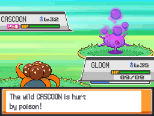
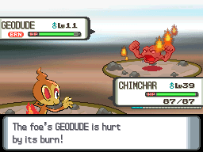
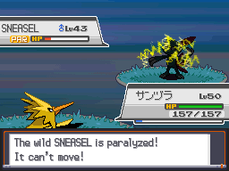
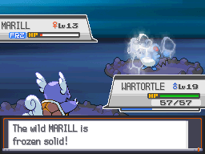
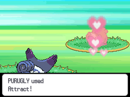

There are currently 18 widely accepted types that pokemon are recogized as. A pokemon may have one of these types or they may have two.

Normal is weak to fighting.
Normal gives and recieves neutral damage to everything except for rock and steel which resist it, and ghost.
Normal is immune to ghost and can't damage it either.
Grass is weak to fire, flying, bug, posion, and ice.
Grass resists water, electricity, grass, and ground.
Grass is super effective on water, rock, and ground.
Fire is weak to water, ground, and rock.
Fire is super effective on grass, bug, ice, and steel.
Fire resists grass, fire, steel, ice, and fairy.
Water is weak to grass and electric.
Water is super effective on fire, rock, and ground.
Water resists fire, steel, water, and ice.
Fighting is weak to psychic, fairy, and flying.
Fighting is super effective on rock, steel, ice, dark, and normal.
Fighting resists rock, bug, and dark.
Flying is weak to electric, rock, and ice.
Flying is super effective on bug, grass, and fighting.
Flying resists fighting and grass.
Flying is immune to ground.
Poison is weak to ground and psychic.
Poison is super effective on fairy and grass.
Poison resists fighting, poison, bug, grass, and fairy.
Poison has no effect on steel.
Ground is weak to water, grass, and ice.
Ground is super effective on electric, fire, rock, steel, and poison.
Ground resists poison, and rock.
Ground is immune to electric.
Rock is weak to fighting, ground, water, grass, and steel.
Rock is super effective on fire, flying, ice, and bug.
Rock resists normal, flying, fire, and poison.
Bug is weak to flying, rock, and fire.
Bug is super effective on grass, dark, and psychic.
Bug resists grass, fighting, and ground.
Ghost is weak to ghost and dark.
Ghost is super effective on psychic and ghost.
Ghost resists poison and bug.
Ghost is immune to normal and fighting.
Ghost has no effect on normal.
Steel is weak to fire, fighting, and ground.
Steel is super effective on rock, ice, and fairy.
Steel resists normal, flying, rock, bug, steel, grass, psychic, ice, dragon, and fairy.
Steel is immune to poison.
Electric is weak to ground.
Electric is super effective on water and flying.
Electric resists flying, electric, and steel.
Electric has no effect on ground.
Psychic is weak to bug, ghost, and dark.
Psychic is super effective on poison, and fighting.
Psychic resists psychic and fighting.
Psychic has no effect on dark.
Ice is weak to fire, fighting, steel, and rock.
Ice is super effective on dragon, grass, ground, and flying.
Ice resists ice.
Dragon is weak to dragon, ice, and fairy.
Dragon is super effective on dragon.
Dragon resists fire, water, grass, and electric.
Dragon has no effect on fairy
Dark is weak to fighting and bug.
Dark is super effective on psychic and ghost.
Dark resists ghost and dark.
Dark is immune to psychic.
Fairy is weak to steel and poison.
Fairy is super effective on dragon, dark, and fighting.
Fairy resists dark, fighting, and bug.
Fairy is immune to dragon.
In addition to attacks that lower health,
Pokemon are capable of using moves that inflict a variety status conditions.
There are five main status effects that are worthing having an icon on the health bar. For some odd reason a pokemon can only be inflicted with one at a time.
Sleep
A sleeping pokemon cannot attack. It will wake up eventually. A sleeping pokemon is capable of using yawn and sleep talk if it knows the moves. Also vulnerable to dream eater.
Poison
A poisoned pokemon takes damage each turn. Can be inflicted by many poison type attacks. Some moves inflict badly poisoned status which doubles damage every turn. Poison and steel types cannot be poisoned.
Burn
A pokemon is essentially set on fire. Takes damage every turn and has lowered attack. Some fire type moves can inflict burn. Fire types cannot be burned.
Paralysis
The pokemon has its speed reduced to 25% of normal. In addition the pokemon has a 25% chance of beig uale to move. Some electric type moves inflict paralysis. Electric type pokemon are immune to this status effect.
Frozen
A frozen pokemon is unable to move, though it may thaw out. A few ice moves can freeze, but it remains a low chance. Status cannot be inflicted in harsh sunlight. Getting hit by fire moves will thaw the pokemon, as will using certain fire moves. Ice type pokemon cannot be frozen.
Confusion
Unlike the above conditions, confusion is a secondary condition that can be inflicted while suffering from one of the above.A confused pokemon will hurt it self 50% of the time. When combined with paralysis, "parafusion" is an effective way of disaling an opponent's pokemon.

Infatuation
Like confusion, infatutation is a secondary condition. Ifatuation can be inflicted on pokemon of the opposite gender through used of the move attract or the ability cute charm. An infatuauted pokemon may be immobilzed by love, preventing it from moving. Genderless pokemon can only be infatuated by other genderless pokemon.
All pokemon have a single passive trait that helps them in battle...except the ones that have awful abilities.
Abilities vary between pokemon species, some have one possible ability, other species have two possibilities, and some even have a hidden ability which is usually better than its normal ability.